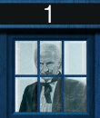
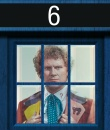
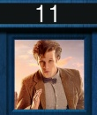
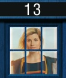
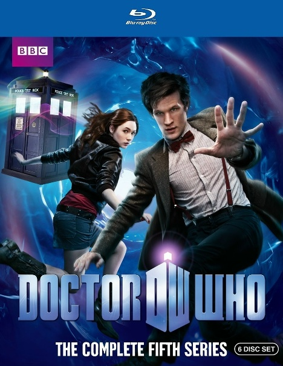
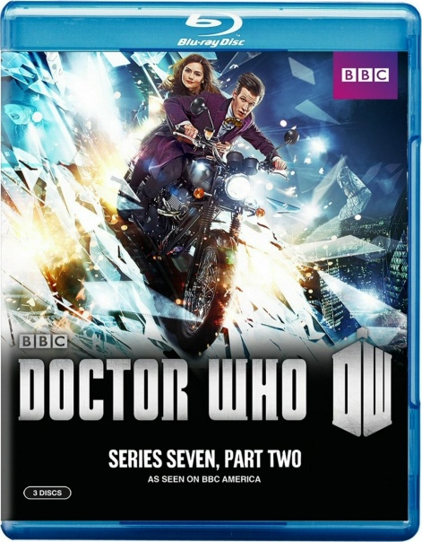

Таблица коллекции |  Навигация по канону |  Связные экранизации |
Таблица коллекции | Навигация по канону | Связные экранизации |











Эра Одиннадцатого Доктора
Актёр: Мэтт Смит

Мэтт Смит: юный лицом, старый душой. Эми Понд, трещины во времени и сказочный сумеречный тон перезапускают сериал.
Наш плейлист сезона в ВК

Сезон экспериментирует с форматом, включая историю, где сама Сара Джейн исчезает. Дети берут инициативу в свои руки.

Тишина как враг и загадка Ривер Сонг выходят на первый план. Сезон смело ломает структуру: разделение надвое, обманка со смертью Доктора в премьере и постепенное раскрытие загадки в финале.
Действие переносится в США, формат расширен до десяти серий. Концепция «никто не умирает» разворачивается в тревожный социальный триллер.

Финальный сезон, незавершённый из-за смерти Элизабет Слейден. Три истории — тёплое прощание с героиней и сериалом.

Понды уходят, каждый эпизод работает как самостоятельный фильм. Прощание с Эми и Рори — один из самых эмоциональных моментов сериала.

Загадка Клары Освальд движет сюжетом, финал на Трензалоре раскрывает судьбу Доктора. Тон эпичнее, подводится итог всей эры.